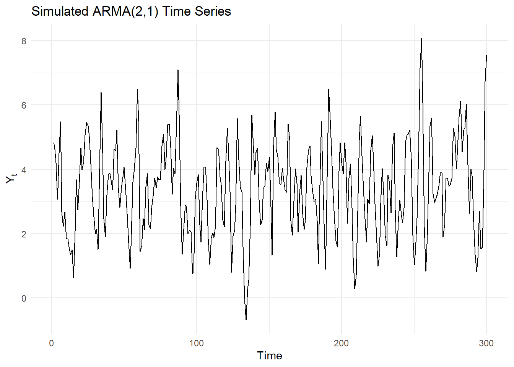
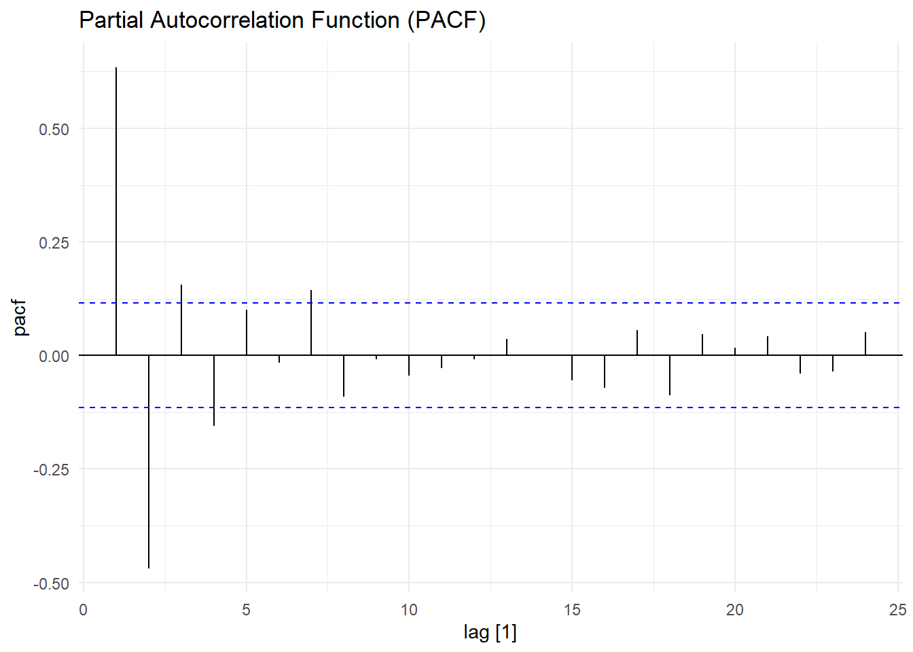
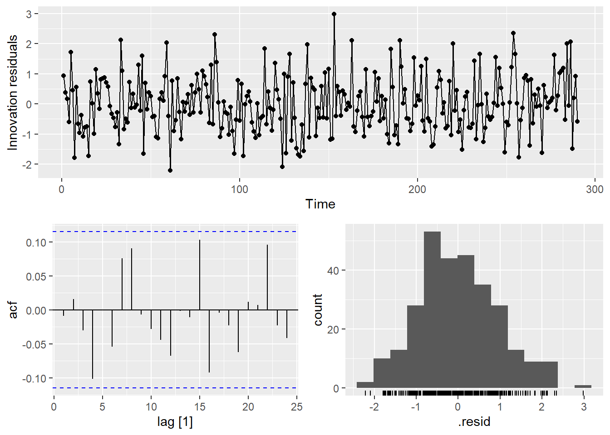
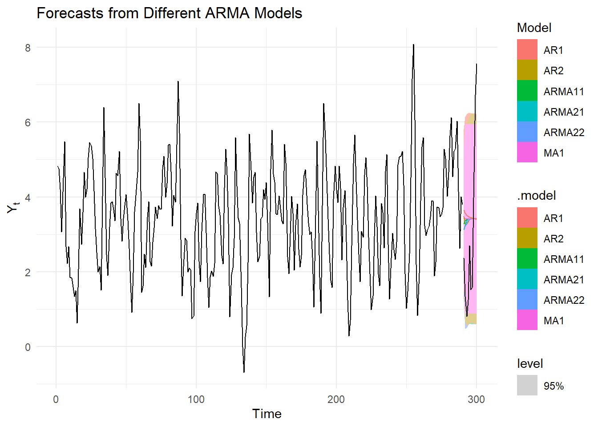
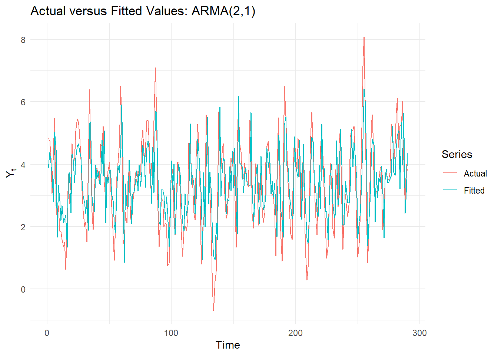

library(tsibble)
library(dplyr)
library(ggplot2)
library(feasts)
library(fable)
library(fabletools)
library(tidyr)Time Series Forecasting
ARMA Modelling and Forecast Accuracy
The code is explained using R. However, the lecturer has explained the underlying concepts and calculations in detail. Therefore, you are expected to understand the methods and perform the calculations using any software you are comfortable with. You are not required to use R specifically.
1. Load packages
2. Set seed
set.seed(123)3. Define ARMA parameters
We consider an ARMA(2,1) process:
\[ Y_t = c + \phi_1Y_{t-1}+\phi_2Y_{t-2} +\varepsilon_t+\theta_1\varepsilon_{t-1} \]
n <- 300
phi1 <- 0.6
phi2 <- -0.2
theta1 <- 0.5
intercept <- 2
sigma <- 1
# Unconditional mean
mu <- intercept / (1 - phi1 - phi2)
mu[1] 3.3333334. Simulate ARMA(2,1)
y <- arima.sim(
model = list(
ar = c(phi1, phi2),
ma = theta1
),
n = n,
sd = sigma
) + mu5. Convert to tsibble
data <- tibble(
Time = 1:n,
Y = as.numeric(y)
) |>
as_tsibble(index = Time)
# Examine data
data# A tsibble: 300 x 2 [1]
Time Y
<int> <dbl>
1 1 4.82
2 2 4.76
3 3 4.20
4 4 3.07
5 5 4.51
6 6 5.48
7 7 2.67
8 8 2.22
9 9 2.68
10 10 1.86
# ℹ 290 more rows# First six observations
head(data)# A tsibble: 6 x 2 [1]
Time Y
<int> <dbl>
1 1 4.82
2 2 4.76
3 3 4.20
4 4 3.07
5 5 4.51
6 6 5.48# Summary
summary(data) Time Y
Min. : 1.00 Min. :-0.6807
1st Qu.: 75.75 1st Qu.: 2.2702
Median :150.50 Median : 3.4462
Mean :150.50 Mean : 3.3932
3rd Qu.:225.25 3rd Qu.: 4.3986
Max. :300.00 Max. : 8.0852 6. Visualise the time series
data |>
autoplot(Y) +
labs(
title = "Simulated ARMA(2,1) Time Series",
x = "Time",
y = expression(Y[t])
) +
theme_minimal()
7. Split data into training and test sets
We use the first 250 observations for model estimation and the remaining 50 observations for evaluating forecast accuracy.
train <- data |>
filter(Time <= 290)
test <- data |>
filter(Time > 290)
# Number of observations
nrow(train)[1] 290nrow(test)[1] 10Visualise the training and test sets.
ggplot() +
geom_line(
data = train,
aes(x = Time, y = Y, colour = "Training")
) +
geom_line(
data = test,
aes(x = Time, y = Y, colour = "Test")
) +
labs(
title = "Training and Test Data",
x = "Time",
y = expression(Y[t]),
colour = "Data"
) +
theme_minimal()
8. Examine ACF
train |>
ACF(Y) |>
autoplot() +
labs(
title = "Autocorrelation Function (ACF)"
) +
theme_minimal()
library(tseries)Registered S3 method overwritten by 'quantmod':
method from
as.zoo.data.frame zoo x <- train$Y
# Augmented Dickey-Fuller test
adf.test(x)Warning in adf.test(x): p-value smaller than printed p-value
Augmented Dickey-Fuller Test
data: x
Dickey-Fuller = -5.279, Lag order = 6, p-value = 0.01
alternative hypothesis: stationary# KPSS test for level stationarity
kpss.test(x, null = "Level")Warning in kpss.test(x, null = "Level"): p-value greater than printed p-value
KPSS Test for Level Stationarity
data: x
KPSS Level = 0.17255, Truncation lag parameter = 5, p-value = 0.1# KPSS test for trend stationarity
kpss.test(x, null = "Trend")Warning in kpss.test(x, null = "Trend"): p-value greater than printed p-value
KPSS Test for Trend Stationarity
data: x
KPSS Trend = 0.095287, Truncation lag parameter = 5, p-value = 0.1library(urca)
# ADF with intercept
adf_level <- ur.df(x, type = "drift",
selectlags = "AIC")
summary(adf_level)
###############################################
# Augmented Dickey-Fuller Test Unit Root Test #
###############################################
Test regression drift
Call:
lm(formula = z.diff ~ z.lag.1 + 1 + z.diff.lag)
Residuals:
Min 1Q Median 3Q Max
-2.4607 -0.6186 -0.0460 0.5917 3.2397
Coefficients:
Estimate Std. Error t value Pr(>|t|)
(Intercept) 1.82053 0.16223 11.222 <2e-16 ***
z.lag.1 -0.53589 0.04458 -12.022 <2e-16 ***
z.diff.lag 0.46848 0.05222 8.972 <2e-16 ***
---
Signif. codes: 0 '***' 0.001 '**' 0.01 '*' 0.05 '.' 0.1 ' ' 1
Residual standard error: 0.9773 on 285 degrees of freedom
Multiple R-squared: 0.3634, Adjusted R-squared: 0.359
F-statistic: 81.36 on 2 and 285 DF, p-value: < 2.2e-16
Value of test-statistic is: -12.0218 72.2634
Critical values for test statistics:
1pct 5pct 10pct
tau2 -3.44 -2.87 -2.57
phi1 6.47 4.61 3.79# ADF with intercept and trend
adf_trend <- ur.df(x, type = "trend",
selectlags = "AIC")
summary(adf_trend)
###############################################
# Augmented Dickey-Fuller Test Unit Root Test #
###############################################
Test regression trend
Call:
lm(formula = z.diff ~ z.lag.1 + 1 + tt + z.diff.lag)
Residuals:
Min 1Q Median 3Q Max
-2.3715 -0.6446 -0.0618 0.5731 3.2269
Coefficients:
Estimate Std. Error t value Pr(>|t|)
(Intercept) 1.7096305 0.1838498 9.299 <2e-16 ***
z.lag.1 -0.5412611 0.0447252 -12.102 <2e-16 ***
tt 0.0008878 0.0006951 1.277 0.203
z.diff.lag 0.4705468 0.0521854 9.017 <2e-16 ***
---
Signif. codes: 0 '***' 0.001 '**' 0.01 '*' 0.05 '.' 0.1 ' ' 1
Residual standard error: 0.9763 on 284 degrees of freedom
Multiple R-squared: 0.3671, Adjusted R-squared: 0.3604
F-statistic: 54.9 on 3 and 284 DF, p-value: < 2.2e-16
Value of test-statistic is: -12.1019 48.8261 73.238
Critical values for test statistics:
1pct 5pct 10pct
tau3 -3.98 -3.42 -3.13
phi2 6.15 4.71 4.05
phi3 8.34 6.30 5.36Testing for Stationarity
Stationarity is an important assumption in time-series modelling. A weakly stationary time series has a constant mean and variance over time, and its autocovariance depends only on the time lag.
We use the Augmented Dickey–Fuller (ADF) and Kwiatkowski–Phillips–Schmidt–Shin (KPSS) tests to investigate whether a time series is stationary. These tests have different null hypotheses and therefore provide complementary evidence.
1. Augmented Dickey–Fuller (ADF) test The ADF test examines whether a time series contains a unit root. The null hypothesis is that the series is non-stationary due to the presence of a unit root.
The test can be conducted under different deterministic specifications.
ADF test with an intercept (drift)
This specification allows the series to have a non-zero constant mean under the stationary alternative.
Hypotheses: \[ H_0: \text{The series has a unit root (non-stationary).} \]
\[ H_1: \text{The series is stationary around a constant mean.} \]
ADF test with an intercept and a linear trend
This specification allows for a deterministic linear trend in the series.
Hypotheses: \[ H_0: \text{The series has a unit root (non-stationary).} \]
\[ H_1: \text{The series is trend stationary.} \]
The ADF test is based on the estimated coefficient of the lagged level of the series.
- Kwiatkowski–Phillips–Schmidt–Shin (KPSS) test Unlike the ADF test, the KPSS test takes stationarity as its null hypothesis. It investigates whether the series is stationary around a specified deterministic component.
KPSS test for level stationarity
Hypotheses: \[ H_0: \text{The series is stationary around a constant level.} \]
\[ H_1: \text{The series is non-stationary.} \]
KPSS test for trend stationarity
Hypotheses: \[ H_0: \text{The series is stationary around a deterministic linear trend.} \]
\[ H_1: \text{The series is non-stationary.} \]
The tidyverts framework provides a convenient way to conduct stationarity analysis within a tidy time-series workflow.
- KPSS test using features() The unitroot_kpss() function performs the KPSS test.
The hypotheses depend on the selected deterministic component.
Level stationarity
\[ H_0: Y_t \text{ is stationary around a constant level} \]
\[ H_1: Y_t \text{ is non-stationary} \]
Trend stationarity
\[ H_0: Y_t \text{ is stationary around a deterministic trend} \]
\[ H_1: Y_t \text{ is non-stationary} \]
The type argument specifies the deterministic component:
type = “mu”: Level stationarity.
type = “tau”: Trend stationarity.
Example using a tsibble named train with a response variable named value:
library(tsibble)
library(feasts)
library(dplyr)
# KPSS test for level stationarity
train |>
features(Y, unitroot_kpss, type = "mu")# A tibble: 1 × 2
kpss_stat kpss_pvalue
<dbl> <dbl>
1 0.173 0.1# KPSS test for trend stationarity
train |>
features(Y, unitroot_kpss, type = "tau")# A tibble: 1 × 2
kpss_stat kpss_pvalue
<dbl> <dbl>
1 0.0953 0.19. Examine PACF
train |>
PACF(Y) |>
autoplot() +
labs(
title = "Partial Autocorrelation Function (PACF)"
) +
theme_minimal()
10. Fit several ARMA models using fable
We fit the following models:
- AR(1)
- AR(2)
- MA(1)
- ARMA(1,1)
- ARMA(2,1)
- ARMA(2,2)
fit_arma <- train |>
model(
AR1 = ARIMA(Y ~ pdq(1, 0, 0)),
AR2 = ARIMA(Y ~ pdq(2, 0, 0)),
MA1 = ARIMA(Y ~ pdq(0, 0, 1)),
ARMA11 = ARIMA(Y ~ pdq(1, 0, 1)),
ARMA21 = ARIMA(Y ~ pdq(2, 0, 1)),
ARMA22 = ARIMA(Y ~ pdq(2, 0, 2))
)11. Model summaries
report(fit_arma)Warning in report.mdl_df(fit_arma): Model reporting is only supported for
individual models, so a glance will be shown. To see the report for a specific
model, use `select()` and `filter()` to identify a single model.# A tibble: 6 × 8
.model sigma2 log_lik AIC AICc BIC ar_roots ma_roots
<chr> <dbl> <dbl> <dbl> <dbl> <dbl> <list> <list>
1 AR1 1.22 -439. 884. 885. 895. <cpl [1]> <cpl [0]>
2 AR2 0.952 -403. 815. 815. 830. <cpl [2]> <cpl [0]>
3 MA1 0.973 -407. 820. 820. 831. <cpl [0]> <cpl [1]>
4 ARMA11 0.900 -395. 799. 799. 814. <cpl [1]> <cpl [1]>
5 ARMA21 0.897 -394. 799. 799. 817. <cpl [2]> <cpl [1]>
6 ARMA22 0.892 -393. 798. 798. 820. <cpl [2]> <cpl [2]>12. Extract estimated coefficients
tidy(fit_arma)# A tibble: 19 × 6
.model term estimate std.error statistic p.value
<chr> <chr> <dbl> <dbl> <dbl> <dbl>
1 AR1 ar1 0.635 0.0452 14.1 1.33e-34
2 AR1 constant 1.25 0.0642 19.4 2.05e-54
3 AR2 ar1 0.932 0.0517 18.0 3.14e-49
4 AR2 ar2 -0.467 0.0517 -9.03 2.44e-17
5 AR2 constant 1.82 0.0570 32.0 5.08e-97
6 MA1 ma1 0.844 0.0273 31.0 6.62e-94
7 MA1 constant 3.41 0.106 32.1 2.15e-97
8 ARMA11 ar1 0.331 0.0650 5.10 6.15e- 7
9 ARMA11 ma1 0.733 0.0479 15.3 3.42e-39
10 ARMA11 constant 2.28 0.0958 23.8 3.19e-70
11 ARMA21 ar1 0.443 0.104 4.25 2.84e- 5
12 ARMA21 ar2 -0.135 0.0920 -1.47 1.42e- 1
13 ARMA21 ma1 0.638 0.0946 6.75 8.25e-11
14 ARMA21 constant 2.36 0.0903 26.1 3.24e-78
15 ARMA22 ar1 0.938 0.216 4.33 2.02e- 5
16 ARMA22 ar2 -0.316 0.0845 -3.74 2.23e- 4
17 ARMA22 ma1 0.140 0.219 0.640 5.23e- 1
18 ARMA22 ma2 -0.360 0.176 -2.04 4.21e- 2
19 ARMA22 constant 1.29 0.0429 30.0 5.13e-9113. Extract fitted values and residuals
augment(fit_arma)# A tsibble: 1,740 x 6 [1]
# Key: .model [6]
.model Time Y .fitted .resid .innov
<chr> <int> <dbl> <dbl> <dbl> <dbl>
1 AR1 1 4.82 3.74 1.09 1.09
2 AR1 2 4.76 4.31 0.449 0.449
3 AR1 3 4.20 4.27 -0.0682 -0.0682
4 AR1 4 3.07 3.92 -0.847 -0.847
5 AR1 5 4.51 3.20 1.31 1.31
6 AR1 6 5.48 4.11 1.37 1.37
7 AR1 7 2.67 4.73 -2.06 -2.06
8 AR1 8 2.22 2.94 -0.719 -0.719
9 AR1 9 2.68 2.66 0.0187 0.0187
10 AR1 10 1.86 2.95 -1.09 -1.09
# ℹ 1,730 more rows14. Residual diagnostics for ARMA(2,1)
The gg_tsresiduals() function requires a mable containing only one model. Therefore, we fit the ARMA(2,1) model separately for residual diagnostics.
fit_arma21 <- train |>
model(
ARMA21 = ARIMA(Y ~ pdq(2, 0, 1))
)
# Residual diagnostic plots
fit_arma21 |>
gg_tsresiduals()Warning: `gg_tsresiduals()` was deprecated in feasts 0.4.2.
ℹ Please use `ggtime::gg_tsresiduals()` instead.
15. Ljung-Box test
The Ljung-Box test examines whether the model residuals exhibit significant autocorrelation.
augment(fit_arma21) |>
features(
.innov,
ljung_box,
lag = 20,
dof = 3
)# A tibble: 1 × 3
.model lb_stat lb_pvalue
<chr> <dbl> <dbl>
1 ARMA21 18.1 0.383Interpretation:
- Null hypothesis: The residuals are independently distributed (no autocorrelation up to the specified lag).
- Alternative hypothesis: The residuals exhibit autocorrelation.
- A p-value greater than 0.05 indicates insufficient evidence to reject the null hypothesis.
16. Generate forecasts for the test period
We generate 50-step-ahead forecasts from all six models.
fc <- fit_arma |>
forecast(h = nrow(test))17. Forecast table
fc# A fable: 60 x 4 [1]
# Key: .model [6]
.model Time
<chr> <dbl>
1 AR1 291
2 AR1 292
3 AR1 293
4 AR1 294
5 AR1 295
6 AR1 296
7 AR1 297
8 AR1 298
9 AR1 299
10 AR1 300
# ℹ 50 more rows
# ℹ 2 more variables: Y <dist>, .mean <dbl>18. Forecast plots
fc |>
autoplot(train, level = 95) +
autolayer(
test,
Y,
colour = "black"
) +
labs(
title = "Forecasts from Different ARMA Models",
x = "Time",
y = expression(Y[t]),
colour = "Model"
) +
theme_minimal()
19. Compare actual and fitted values
We illustrate the fitted values for the ARMA(2,1) model.
fitted_data <- augment(fit_arma21)
ggplot(fitted_data, aes(x = Time)) +
geom_line(aes(y = Y, colour = "Actual")) +
geom_line(aes(y = .fitted, colour = "Fitted")) +
labs(
title = "Actual versus Fitted Values: ARMA(2,1)",
x = "Time",
y = expression(Y[t]),
colour = "Series"
) +
theme_minimal()
20. Forecast accuracy using fable
The accuracy() function from fabletools calculates forecast accuracy by comparing forecasts with actual observations in the test set.
accuracy_results <- accuracy(
fc,
test
)
accuracy_results# A tibble: 6 × 10
.model .type ME RMSE MAE MPE MAPE MASE RMSSE ACF1
<chr> <chr> <dbl> <dbl> <dbl> <dbl> <dbl> <dbl> <dbl> <dbl>
1 AR1 Test -0.496 2.34 2.10 -88.3 112. NaN NaN 0.609
2 AR2 Test -0.403 2.27 2.01 -81.1 105. NaN NaN 0.600
3 ARMA11 Test -0.406 2.29 2.01 -82.7 106. NaN NaN 0.602
4 ARMA21 Test -0.376 2.27 1.99 -80.8 105. NaN NaN 0.600
5 ARMA22 Test -0.364 2.25 1.97 -79.5 103. NaN NaN 0.598
6 MA1 Test -0.432 2.30 2.04 -84.0 108. NaN NaN 0.605Interpretation of accuracy measures
| Measure | Description | Preferred value |
|---|---|---|
| ME | Mean Error | Close to 0 |
| RMSE | Root Mean Squared Error | Lower |
| MAE | Mean Absolute Error | Lower |
| MPE | Mean Percentage Error | Close to 0 |
| MAPE | Mean Absolute Percentage Error | Lower |
| MASE | Mean Absolute Scaled Error | Lower |
| RMSSE | Root Mean Squared Scaled Error | Lower |
| ACF1 | Lag-1 autocorrelation of forecast errors | Close to 0 |
**Note